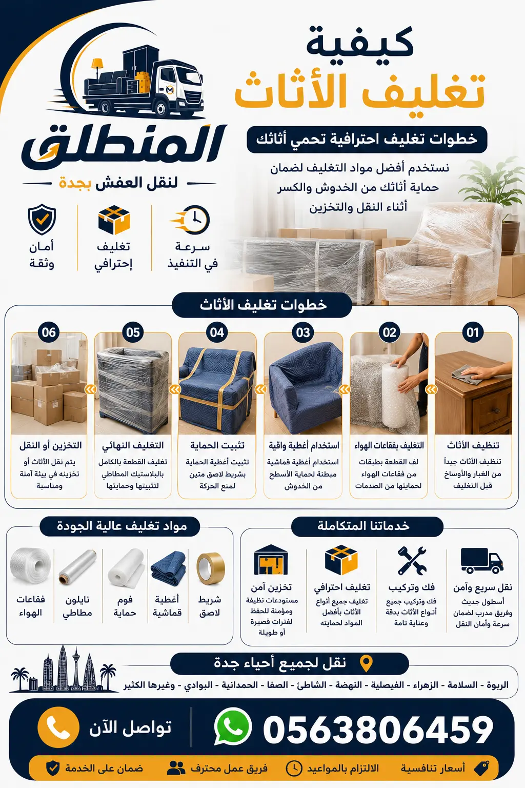

تغليف الأثاث هو عملية حماية العفش من التلف باستخدام مواد مخصصة مثل البلاستيك الفقاعي والكرتون المقوى. في هذا الدليل، نقدم لك خطوات تغليف العفش في جدة بشكل احترافي، مع نصائح حول مواد تغليف الأثاث وأسعار الخدمة. شركة المنطلق تشاركك خبرتها لضمان وصول أثاثك بأمان.
تغليف الأثاث هو عملية حماية قطع العفش باستخدام مواد عازلة مثل البلاستيك الفقاعي والكرتون والنايلون لحمايتها من الخدوش والكسر والغبار والرطوبة أثناء النقل أو التخزين . في مدينة جدة، حيث تنتقل العائلات بشكل متكرر بين الأحياء السكنية، تصبح عملية تغليف العفش في جدة ضرورية لضمان سلامة الأثاث، خاصة مع تنوع الأحياء من شمال جدة (الموز، الأندلس، الربيع) إلى جنوبها (غليل، البوادي، اليمن) وشرقها (مشرفة، السلامة، النعيم) وغربها (الشاطئ، المرجان، البغدادية الغربية) .
تخيل أنك تنقل غرفة نوم كلاسيكية بدون تغليف؛ قد تتعرض الخشب للخدوش، وقد تتكسر المرايا، وقد تتلف الأدراج. هذا هو السبب الذي يجعل تغليف العفش خطوة لا غنى عنها قبل أي عملية نقل أو تخزين. في شركة المنطلق، نؤمن بأن التغليف الجيد هو نصف عملية النقل الناجحة، لأنه يحمي استثمارك في الأثاث ويوفر عليك تكاليف الإصلاح أو الاستبدال .
لا يقتصر التغليف على الحماية من الصدمات فقط، بل يشمل أيضاً الحماية من العوامل البيئية مثل الرطوبة والغبار، خاصة في مدينة جدة الساحلية التي ترتفع فيها نسبة الرطوبة . التغليف الاحترافي يطيل عمر الأثاث ويحافظ على جماليته. سواء كنت تنقل منزلاً أو تخطط لتخزين الأثاث لفترة مؤقتة، فإن تعلم كيفية تغليف الأثاث بشكل صحيح هو مهارة ثمينة. تابع معنا هذا الدليل الشامل لتتعرف على كل ما تحتاج معرفته عن تغليف العفش في جدة.

لنجاح عملية تغليف الأثاث، يجب استخدام المواد المناسبة لكل نوع من العفش. في شركة المنطلق، نستخدم مجموعة متكاملة من مواد التغليف عالية الجودة لحماية أثاث عملائنا في جدة . إليك قائمة بأهم المواد التي تحتاجها لـ تغليف العفش في جدة:
يمكنك الاطلاع على تفاصيل أكثر حول خدمات التغليف مع النقل التي نقدمها. اختيار المواد الصحيحة هو أساس عملية تغليف العفش الناجحة. لا تتردد في سؤال فريقنا عن أفضل المواد لعفشك.
عملية تغليف الأثاث ليست مجرد لف القطع بالبلاستيك، بل هي سلسلة من الخطوات المنظمة التي تضمن حماية فائقة. في نقل العفش في جدة، نتبع خطوات محددة لضمان وصول الأثاث بحالة ممتازة .
لمزيد من النصائح حول أسعار نقل العفش في جدة والعوامل المؤثرة فيها، تفضل بزيارة مدونتنا. اتباع هذه الخطوات يضمن لك عملية تغليف أثاث ناجحة وخالية من المشاكل.
تغليف غرف النوم يتطلب عناية خاصة لأنها تحتوي على قطع كبيرة وثقيلة مثل الأسرّة والدواليب والخزائن، وجميعها معرضة للخدوش أثناء النقل. في شركة المنطلق، نبدأ بتفكيك غرفة النوم بالكامل بواسطة نجارين متخصصين، ثم نغلف كل جزء على حدة .
لحماية الدولاب الكبير، نقوم بفك الأبواب والأدراج، ونغلف كل لوح باستخدام البلاستيك الفقاعي وزوايا كرتونية لحماية الحواف. المرايا الكبيرة المثبتة على الدولاب تُغلف بطبقة مزدوجة من الفوم والكرتون. أما الأدراج والمفصلات، فتُوضع في أكياس مع المسامير وتُرقم لتسهيل إعادة التركيب .
ننصح باستخدام خدمة فك وتركيب الأثاث في جدة للحصول على أفضل النتائج. أسعار تغليف غرفة نوم كاملة تبدأ من 200 ريال، وتشمل الفك والتغليف وإعادة التركيب. تأكد من أن فريق التغليف يستخدم مواد عالية الجودة لحماية استثمارك.
الكنب والمجالس هي قلب المنزل، وغالباً ما تكون مصنوعة من مواد حساسة مثل الجلد الطبيعي أو الأقمشة الفاخرة. تغليف الكنب والمجالس يتطلب عناية خاصة لحمايتها من الاتساخ والتمزق والخدوش أثناء نقل الأثاث في جدة .
في شركة المنطلق، نستخدم أغطية قماشية سميكة مقاومة للماء والتمزق لتغليف الكنب. نقوم بلف كل قطعة كنب على حدة، مع وضع طبقة من البلاستيك الفقاعي بين القطع المتجاورة لمنع الاحتكاك. المجالس ذات الأرجل الخشبية يتم تفكيك الأرجل وتغليفها بشكل منفصل .
ننصح بقراءة مدونة دينا نقل العفش في جدة لمعرفة كيفية تحميل الكنب بشكل آمن في الشاحنات. أسعار تغليف الكنب تبدأ من 50 ريالاً للقطعة الواحدة، وتشمل الغطاء القماشي الواقي. اتصل بنا لحماية أثاثك الفاخر.
تغليف المطابخ هو من أكثر المهام تعقيداً بسبب كثرة الأدراج والخزائن والأجهزة المدمجة والرخام. في شركة المنطلق، نقدم خدمة متخصصة لتغليف المطابخ بواسطة نجارين مدربين على التعامل مع المطابخ الحديثة والكلاسيكية .
نبدأ بفك جميع الخزائن العلوية والسفلية، وتفكيك الأدراج والمفصلات، ثم نغلف كل لوح على حدة باستخدام البلاستيك الفقاعي والكرتون. الرخام يتم تغليفه بفوم سميك وزوايا خشبية لحمايته من الكسر. نستخدم أقلام تلوين لترقيم الأجزاء لتسهيل عملية التركيب في الموقع الجديد .
يمكنك الاطلاع على صفحة فك وتركيب الأثاث للحصول على تفاصيل إضافية. أسعار تغليف مطبخ صغير تبدأ من 300 ريال، وتشمل الفك والتغليف والتركيب. تأكد من أن فريق التغليف لديه الخبرة الكافية للتعامل مع مطبخك.
الأجهزة الكهربائية هي الأكثر حساسية وتحتاج إلى تغليف خاص لحمايتها من الصدمات والرطوبة. في شركة المنطلق، نستخدم صناديق كرتون أصلية أو مطابقة للحجم مع حشوات فوم سميكة لتغليف الثلاجات والغسالات والمكيفات والشاشات .
لتغليف الشاشات، نستخدم طبقتين من البلاستيك الفقاعي وصندوق كرتون مقوى مع كتابة عبارة "هش" على الصندوق. أما الثلاجات، فتتطلب تفريغها من الطعام وتركها لتذويب الثلج ثم تغليفها بالكامل بالنايلون السميك. الغسالات يتم تثبيت الحوض الداخلي فيها لمنع تحركه أثناء النقل .
لمعرفة المزيد عن أفضل شركات نقل الأثاث في جدة، تفضل بزيارة مدونتنا. أسعار تغليف الأجهزة الكهربائية تبدأ من 30 ريالاً للجهاز الصغير وتصل إلى 100 ريال للثلاجة الكبيرة. نضمن وصول أجهزتك سليمة تماماً.
الزجاج والمرايا والتحف هي الأكثر عرضة للكسر، ولذلك تتطلب تغليفاً احترافياً باستخدام فوم عازل وصناديق خشبية أو كرتونية مخصصة . في شركة المنطلق، نغلف كل لوحة زجاج أو مرآة بطبقتين من البلاستيك الفقاعي، ثم نضيف زوايا كرتونية على الأطراف، ثم نضعها في صندوق خاص مكتوب عليه "زجاج - هش".
التحف والأنتيكات يتم تغليفها بشكل فردي باستخدام فوم ناعم ثم توضع في صناديق صغيرة مع حشوات داخلية لمنع حركتها. ننصح العملاء بتصوير القطع الثمينة قبل التغليف للتوثيق .
يمكنك قراءة المزيد عن تخزين العفش في جدة وكيفية تغليفه للتخزين. أسعار تغليف المرآة الواحدة تبدأ من 40 ريالاً، ونحن نضمن وصول جميع القطع الزجاجية والتحف سليمة بفضل خبرتنا الطويلة.
بعد سنوات من الخبرة في شركة المنطلق لنقل العفش، جمعنا لكم أهم النصائح لـ تغليف الأثاث بشكل احترافي:
لمزيد من النصائح والحيل، تفضل بزيارة مدونتنا حيث ننشر مقالات مفيدة حول كيفية اختيار شركة نقل الأثاث. تذكر أن التغليف الجيد هو استثمار في سلامة أثاثك على المدى الطويل.
نحن نقدم أسعاراً تنافسية لخدمة تغليف العفش في جدة تناسب جميع الميزانيات. الأسعار تبدأ من 100 ريال لتغليف شقة صغيرة (بدون فك وتركيب)، وتصل إلى 1500 ريال للخدمة الشاملة التي تشمل تغليف فيلا كاملة مع الفك والتركيب. الجدول التالي يوضح الأسعار التقريبية حسب نوع الخدمة. للحصول على عرض سعر دقيق يناسب حالتك الخاصة، يمكنك الاتصال بنا أو استخدام نموذج الواتساب.
| نوع الخدمة | السعر التقريبي (ريال) | الوقت المتوقع |
|---|---|---|
| تغليف شقة غرفة نوم (بدون فك) | 100 - 200 | 1-2 ساعات |
| تغليف شقة 3 غرف مع فك جزئي | 300 - 500 | 3-4 ساعات |
| تغليف كنب ومجالس فقط | 150 - 300 | 1-2 ساعات |
| تغليف مطبخ كامل مع الفك والتركيب | 300 - 600 | 2-3 ساعات |
| تغليف فيلا كامل (خدمة شاملة) | 800 - 1500 | 5-7 ساعات |
| تغليف أجهزة كهربائية فقط | 50 - 200 | حسب العدد |
نقدم خصم 15% للحجوزات التي تتم عبر صفحة اتصل بنا أو من خلال موقعنا الإلكتروني. كما نقدم عروضاً شهرية للعملاء الجدد، مثل خصم 50 ريالاً على أول خدمة تغليف. جميع الأسعار شاملة الضرائب، ولا توجد رسوم خفية. يمكنك أيضًا الاطلاع على مدونة أسعار نقل العفش في جدة لمزيد من التفاصيل.
نقدم خدمات تغليف العفش في جدة في جميع الأحياء الرئيسية والفرعية. فريقنا جاهز للوصول إلى أي مكان في جدة لتقديم خدمة التغليف الاحترافية. فيما يلي قائمة بأهم الأحياء التي نغطيها:
نغطي أيضاً أحياء أخرى مثل: الشاطئ، المرجان، البغدادية الغربية، الموز، الأندلس، الربيع، غليل، البوادي، اليمن، مشرفة، النعيم. إذا كان حيك غير مدرج، لا تقلق – نحن نخدم جميع أحياء جدة دون استثناء. اتصل بنا لمعرفة المزيد.
"خدمة تغليف العفش من شركة المنطلق كانت ممتازة جداً. قاموا بتغليف غرفة نومي بالكامل بدقة واحترافية، ووصلت جميع القطع سليمة. أنصح الجميع بالتعامل معهم."
- أحمد محمد (حي الصفا)
"كنت قلقاً من نقل مطبخي الرخامي، لكن فريق المنطلق قام بتغليفه بشكل احترافي وحماه من الكسر. أسعارهم مناسبة جداً مقارنة بالخدمة الممتازة."
- سارة علي (حي الروضة)
"المواد التي استخدموها في تغليف الكنب كانت عالية الجودة، وحافظت على نظافة الكنب الجلدي الفاخر. فريق محترف وسريع. شكراً شركة المنطلق."
- خالد عبدالله (حي السلامة)
"استخدمت خدمة تغليف العفش للتخزين، وكانت ممتازة. غلفوا الأثاث بشكل محكم وحفظوه في مستودعاتهم الآمنة. استرجعت أثاثي بحالة جيدة بعد 6 أشهر."
- نورة حسن (حي الزهراء)
انضم إلى أكثر من 5000 عميل راضٍ عن خدماتنا في جدة. اقرأ المزيد من آراء العملاء
يفضل التغليف في الصباح الباكر لتجنب حرارة الشمس، وفي الأيام الجافة لتجنب الرطوبة. كما ننصح بتجنب التغليف في أيام العطلات الرسمية لضمان توفر الفريق.
يبدأ من 100 ريال للشقة الصغيرة، ويزيد حسب حجم الأثاث ونوع المواد المستخدمة. اتصل على 0563806459 للحصول على عرض سعر دقيق ومجاني.
نستخدم البلاستيك الفقاعي، الكرتون المقوى، الزوايا البلاستيكية، الأغطية القماشية، والنايلون السميك، وجميعها عالية الجودة ومستوردة من أفضل المصانع.
نعم، نوفر خدمة فك وتركيب الأثاث مع التغليف بواسطة نجارين متخصصين، وهي خدمة متكاملة توفر الوقت والجهد.
نعم، نخدم جميع أحياء جدة شمالاً وجنوباً وشرقاً وغرباً، بما في ذلك جميع الأحياء الفرعية. نحن نغطي جدة بالكامل.
تستغرق من 3 إلى 5 ساعات حسب كمية الأثاث وتعقيد القطع. الفريق يعمل بكفاءة عالية لإنجاز المهمة في أسرع وقت ممكن.
نعم، نغلف الثلاجات والغسالات والمكيفات والشاشات بصناديق خاصة وفوم عازل لحمايتها من الصدمات والرطوبة.
نستخدم طبقتين من الفوم وصناديق خشبية للقطع الكبيرة، ونضع ملصقات "هش" على الصناديق، ونضمن وصولها سليمة بنسبة 100%.
نعم، نقدم خدمة تغليف العفش للتخزين في مستودعات آمنة ومكيفة، مع مراقبة كاميرات 24 ساعة وضمان سلامة الأثاث.
جميع عمالنا مدربون على أحدث تقنيات التغليف العالمية ويحملون شهادات خبرة في مجال تغليف ونقل الأثاث.
نعم، نقدم خدمة التغليف فقط إذا كنت ترغب في النقل بنفسك أو مع شركة أخرى. نحن نوفر المرونة الكاملة لعملائنا.
نعم، نقدم ضماناً خطياً على سلامة الأثاث المغلف ضد الخدوش والكسر الناتج عن سوء التغليف، وهذا دليل على ثقتنا بخدمتنا.
يبدأ من 200 ريال ويشمل الفك والتغليف وإعادة التركيب. السعر يعتمد على حجم غرفة النوم ونوع الخشب المستخدم.
نعم، خدمة تغليف العفش في جدة متاحة 24 ساعة طوال أيام الأسبوع بما في ذلك الجمعة والأعياد، لتلبية احتياجات عملائنا في أي وقت.
نعم، معظم موادنا قابلة لإعادة التدوير ونحرص على تقليل النفايات البلاستيكية قدر الإمكان، ونستخدم بدائل صديقة للبيئة حيثما أمكن.
اتصل على 0563806459 أو عبر الواتساب، وسنرسل فريقاً خلال ساعة لتقييم العفش وتقديم عرض السعر المناسب. يمكنك أيضاً الحجز عبر موقعنا الإلكتروني.
استخدم أفضل مواد التغليف لحماية أثاثك مع شركة المنطلق. نوفر تغليفاً شاملاً لجميع أنواع الأثاث مع فك وتركيب ونقل آمن. اتصل الآن للحصول على عرض سعر مجاني.